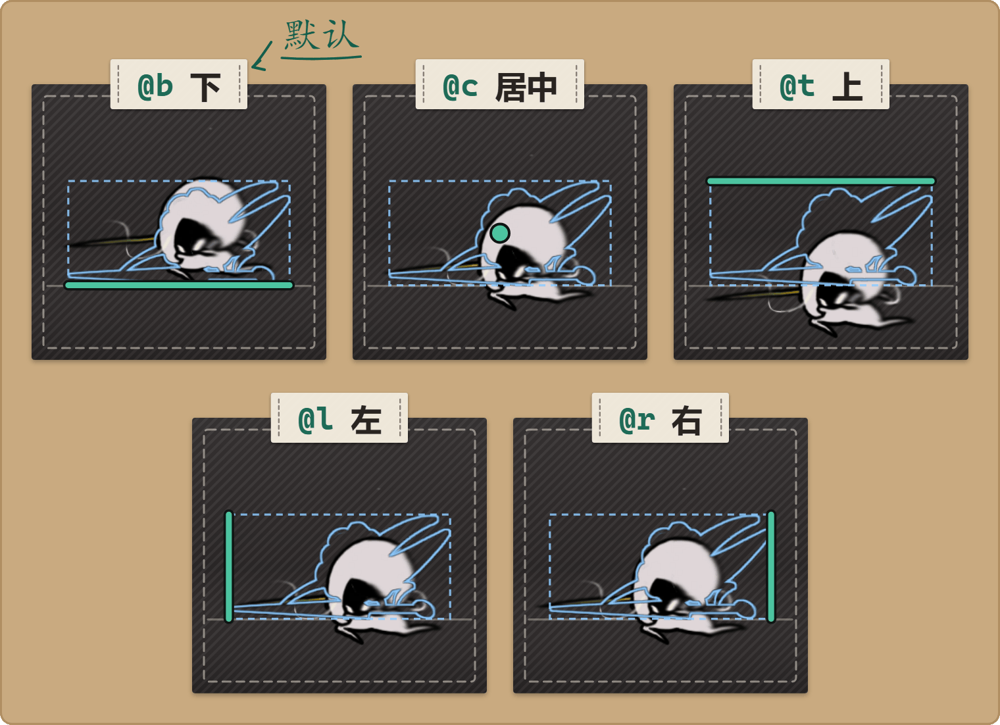
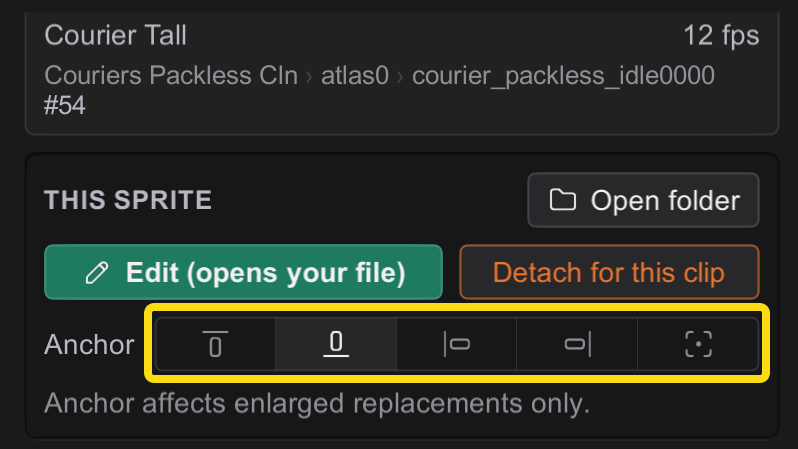

B5 更大的画幅：锚点
精灵图 · 面向创作者
你的美术可以比原版更大：更长的织针，更高的纹章。
多出来的空间放在哪一边，由锚点决定。
你将学会：放大精灵图又不让它跑偏，选对锚点，通过文件名或在图形里设置锚点；五个预设表达不了你想要的位置时，改用精确定位点。
开始之前：先读 B1。只有替换图超出原来的槽位时，这一页才有用；尺寸不变的美术，这些都用不上。
要编辑的是动画？动画画布工作流会替你完成这一页的工作：编译时，它会摆好每一帧，还会自己写好锚点标签。只有单张或静态的精灵图，或者你不在画布里工作时，才需要手写标签。
为什么需要锚点
假设原版精灵图是一个 64×96 的头部，而你画了一个 128×128 的。Stitchwork 会把这个槽位放大，好装下你的美术——但它必须决定放大后的槽位相对身体放在哪里：
- 下（默认）：脖子和下巴的位置不动，美术向上、向两侧扩展。通常这样就对了——大多数角色美术都站在地面上，你会希望和地面接触的位置固定不动。
- 居中：美术向四周均匀扩展，头部会浮得比你想的更高。
- 上：美术挂在上边缘，向下扩展。
选错了，放大后的精灵图就会从身体上滑开。锚点就是用来把它固定住的。

什么时候有影响（什么时候没有）
- 只对比原版槽位更大的替换图有用。这个功能只做这一件事。
- 尺寸相同或更小 → 标签不起作用。槽位根本不会扩大，也就没有什么需要锚定。（图形里仍然可以设置锚点，只是在美术放大之前看不出任何效果。）
五个锚点
是五个，不是九个——Stitchwork 有意去掉了四个角。没有指定的那条轴总是居中：
top (@t)
left (@l) center (@c) right (@r)
bottom (@b)- 下——默认值，你永远不用手动写它；不带标签的文件，锚点就是下。适合所有站在地面上的东西。
- 居中——适合从一个点向外扩散的美术（特效、对称的物品）。
- 上——适合挂着的东西（一束光、一面旗帜）。
- 左 / 右——固定那一侧的边缘，向另一侧扩展。
需要角落？选出最重要的那条轴，另一条会居中。（不提供角落标签是有意的设计——五个锚点，不是九个。）
设置锚点——文件名标签
锚点写在 PNG 文件名里，就是末尾的 @x：
Sprites/{Collection}/{Material}/{Sprite}@t.png| 文件名 | 锚点 |
|---|---|
crest@t.png | 上 |
crest.png | 下（默认） |
crest@b.png | 下（显式写出，和不带标签一样） |
crest@l.png / crest@r.png | 左 / 右 |
crest@c.png | 居中 |
Stitchwork 把文件和精灵图对应起来时，会先去掉标签，所以 crest@t.png 替换的仍然是名为 crest 的精灵图——标签只决定放大后的替换图怎么锚定。
同一张精灵图，不要发布两个文件。如果 crest.png 和 crest@t.png 放在同一个文件夹里，就会冲突；Stitchwork 会按固定的规则处理（按字典序排在前面的胜出，所以不带标签的文件胜过 @t），但你还是应该删掉重复的那个，确保结果就是你想要的。
在图形面板里设置锚点
- 打开图形（按
3），切到动画模式，选中对象和动画片段，再逐帧切到那一帧。控制台的此精灵图分组里有一行锚点：五个按钮，分别是上、下、左、右和居中（鼠标指向按钮就能看到名称）。亮起的那个，就是你文件当前的锚点；不带标签的算作下。 - 点其中一个，Stitchwork 就会重命名你工作区文件夹里的 PNG，加上对应的标签（选下时则去掉标签）：点上，会把
crest.png改名为crest@t.png。精灵图会立即重新载入，不需要重新载入场景。 - 如果目标文件名已经有文件了，Stitchwork 会拒绝改名，而不是把那个文件覆盖掉；这一行下方会显示“无法设置锚点：… 已存在。请先删除重复文件。”
这一行会提醒你：锚点仅对放大的替换图生效。有两种情况下它不可用，下方那行字会说明原因：
- 此精灵图尚无替换文件：点编辑会创建一个，之后就能设置锚点。
- 由资源包提供：某个已启用资源包的文件对这张精灵图生效，而这些按钮只会重命名你工作区文件夹里的文件。
这些按钮适用于不带标签的文件名，以及带预设标签（@t @b @l @r @c）的文件名。对于 @p 文件（画布编译的输出），不会有按钮亮起；点任意一个按钮，就会用那个预设替换掉精确定位点。它们不会动实例专用文件夹或 Clips/ 里的文件；这些请手动改名。

精确定位点——@p<px>_<py>
五个预设只是最常见几种摆放方式的简写。如果你需要的摆放方式是它们表达不了的——比如不对称的扩展：上方 +50 px，下方却只有 +25——那就用通用写法：
Sprites/{Collection}/{Material}/{Sprite}@p120_64.png@p<px>_<py> 会这样摆放你的替换图：让它的像素 (px 从左边数，py 从下边数) 正好落在原版精灵图的定位点上。(px, py) 取值，所以它们能做的，@p 都能做——它们做不到的，它也能做。
你很少需要手写它——它通常是替你生成的：动画画布的编译会给每一个画得超出原有范围的帧打上 @p 标签，让它的对位分毫不差。不过它确实是写进文档的正式标签；如果你要手动摆放不对称放大的美术，它就是最精确的工具。
资源包与工作区文件夹
- 资源包直接带着标签名发布——资源包作者只需要在
…/Sprites/{coll}/{mat}/里把文件命名为{Sprite}@t.png。 - 锚点按钮只作用于你的工作区文件夹（
<Game folder>/）——它们绝不会重命名别人资源包文件夹里的文件。Stitchwork/ Sprites/ … - 如果几个资源包提供了同一张精灵图，由通常的优先级顺序决定哪个文件（以及它的标签）生效。
从 anchors.txt 迁移
旧的资源包用的是附带的 Sprites/ 文件。现在已经不再读取它了——Stitchwork 发现它时会在日志里警告一次，资源包体检的报告也会标出它。迁移方法：对每一行 spriteName = anchor，把那张精灵图的 PNG 改名，加上对应的标签，然后删掉 anchors.txt。原来的九个点合并成五个——角落请选最重要的那条轴；*-center → 对应的那一侧；单独的 center → @c；bottom-center → 不带标签。
问题排查
- “放大后的精灵图位置不对。”检查文件名上的标签，并确认文件放在正确的集合 + 材质路径下。
- “设置了锚点，却什么都没变。”只有替换图比槽位更大时，锚点才会显出效果。尺寸相同的美术 → 标签不起作用。
- “图形面板拒绝设置我的锚点。”已经有文件用了目标标签名。删掉重复的文件，再设置一次。
- “锚点按钮是灰的。”看看按钮下面那行字：要么你还没有替换文件，要么这张精灵图由某个资源包提供。
- “我以前的
anchors.txt不起作用了。”Stitchwork 已经不再读取它，改用文件名标签。参见上文的从anchors.txt迁移。